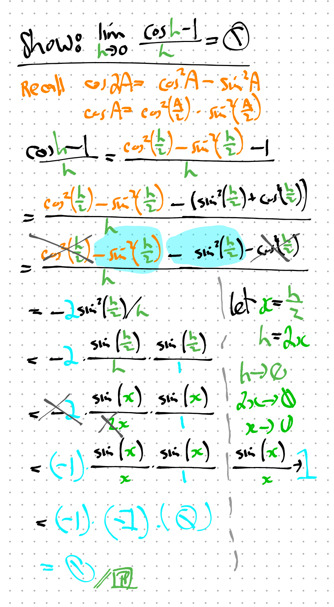
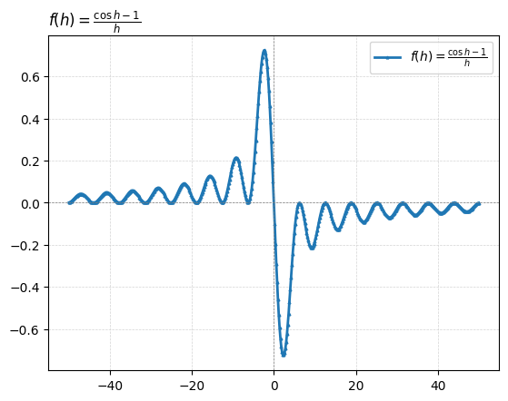
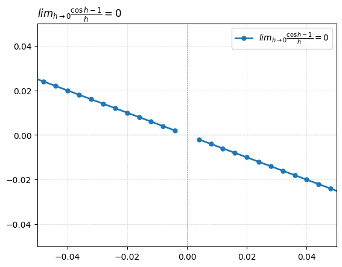

from matplotlib.ticker import MaxNLocator
import numpy as np
import matplotlib.pyplot as plt
import matplotlib.ticker as ticker
1. Show \(lim_{h\to0} \frac{\cos{h}-1}{h} = 0\)
2. Solution (Hand-Written)

3. Chart: Any Large \(h\) (Python Code)
Firstly, I’ll look at:
- \(f(h)=\frac{\cos{h}-1}{h}\)
Then, observe behaviour as we zoom into (0,0)
- \(lim_{h\to0} \frac{\cos{h}-1}{h}\)
### x-values ###
xpt = 0
x_deviation = 50
x_increments = 501
xs_min = xpt - x_deviation
xs_max = xpt + x_deviation
xs = np.linspace(xs_min, xs_max, x_increments) # XS
### exclude x-values ### (eg f(x!=0)=1/x, f(x>0)=log(x))
# xs = xs[xs != 1]
xs = xs[xs != 0]
# xs = xs[xs > 0]
# print(xs)
### THE FUNCTION ###
# lbl_fx = r'$f(x)=\frac{1}{x-1}$' # LABEL
lbl_fx = r'$f(h)=\frac{\cos{h}-1}{h}$'
# fx_fx = lambda x: (1)/(x-1) # f(x)
fx_fx = lambda x: (np.cos(x)-1)/x # f(x)
# lbl_fx = r'$f(x)= 6.1t^{2}-9.28t+16.43$' # LABEL
### y-values ###
ys_fx = fx_fx(xs) # ys=f(xs)
# print(ys_fx)
# ypt_fx = fx_fx(xpt)
# print(f"ypt_fx_at_P(x={xpt}): {ypt_fx}")
### fractions? ###
# lbl_denom = r'$f(x)=x-2$'
# fx_denom = lambda x: x-2
# ys_denom = fx_denom(xs)
### derivative ###
# lbl_dydx = r"$f'(x)=6.10*(2t)-9.28$ (dydx or slope fn)"
# fx_dydx = lambda x: 6.1*(2*x)-9.28
# xpt_dydx = xpt
# dydx = fx_dydx(xpt_dydx)
# print(f"ypt_dydx_at_P(x={xpt_dydx}): {dydx}")
### tangent ###
# c_tangent = ypt_fx-(dydx)*(xpt)
# tgt = "tangent"
# lbl_tangent = rf'$f_t(x)={dydx:,.1f}t+{c_tangent:,.1f}$ (tangent at x={xpt})'
# fx_tangent = lambda x: dydx*xs+c_tangent
# ys_tangent = fx_tangent(xs)
### plot things ####
# plt.plot(xs, ys_fx, 'r^-', linewidth=2, markersize=6, label=lbl_fx)
plt.plot(xs, ys_fx, '^-', linewidth=2, markersize=2, label=lbl_fx)
# plt.plot(xs, ys_fx, 'o', markersize=3, label=lbl_fx)
# plt.scatter(xs, ys_fx, marker="o")
# plt.plot(xs, ys_tangent, 'yo-', linewidth=2, markersize=6, label=lbl_tangent)
# plt.plot(xs, ys_denom, 'bo-', linewidth=2, markersize=8, label=lbl_denom)
# plt.scatter(x=xpt, y=fx_fx(xpt), marker="o")
##### EXTRAS: title, grid, legend, zooming, ticks, hline, vline, tickers #####
# title
plot_title = lbl_fx
# plot_title = lbl_fx + f" & it's tangent at x={xpt}"
# plot_title = lbl_fx + "at (4,2)"
# plot_title = lbl_denom + " and " + lbl_denom + "at (3,3)"
# plot_title = lbl_fx + " and " + lbl_tangent + "at (4,2)"
plt.title(plot_title, loc='left')
# grid
plt.grid(color='lightgrey', linestyle='--', linewidth=0.5)
# legend
plt.legend(loc='upper right')
# plt.legend(loc='lower right')
# zoom! enhance! #
# plt.xlim(xpt-5,xpt+5) # x-rng
# plt.ylim(-0.05, 0.05) # y-rng
# plt.xlim(-0.05, 0.05) # y-rng
# plt.xlim(0.5, 1.5) # y-rng
# vertical, horizontal,
ax = plt.gca() # Get the current axis
ax.axvline(x=xpt, color='grey', linestyle='--', linewidth=0.5)
# ax.axhline(y=fx_fx(xpt), color='grey', linestyle='--', linewidth=0.5)
ax.axhline(y=0, color='grey', linestyle='--', linewidth=0.5)
# X-LIMIT & VALUE
# plt.vlines(x_at_c,linestyles="dotted", ymin=plt.ylim()[0], ymax=max(ys)) # non-monotonic
# plt.plot(x_at_c, 0,marker="o",markersize=15, markerfacecolor='none', markeredgecolor='red')
# OTHER
# b+-- , o:b , r^ , bo plt.xlabel("")
# plt.ylim(bottom=0) # chart starts from y=0
# ax.yaxis.set_minor_locator(ticker.MultipleLocator(0.000025)) # minor ticks
# ref: https://matplotlib.org/stable/users/explain/axes/axes_ticks.html

4. Chart: \(\lim_{h->0}\) (Python Code)
Zoom into about (0,0):
- \(lim_{h\to0} \frac{\cos{h}-1}{h} = 0\)
### x-values ###
xpt = 0
x_deviation = 0.1
x_increments = 51
xs_min = xpt - x_deviation
xs_max = xpt + x_deviation
xs = np.linspace(xs_min, xs_max, x_increments) # XS
### exclude x-values ### (eg f(x!=0)=1/x, f(x>0)=log(x))
# xs = xs[xs != 1]
# xs = xs[xs != 0]
# xs = xs[xs > 0]
# print(xs)
### THE FUNCTION ###
# lbl_fx = r'$f(x)=\frac{1}{x-1}$' # LABEL
lbl_fx = r'$lim_{h\to0} \frac{\cos{h}-1}{h} = 0$'
# fx_fx = lambda x: (1)/(x-1) # f(x)
fx_fx = lambda x: (np.cos(x)-1)/x # f(x)
# lbl_fx = r'$f(x)= 6.1t^{2}-9.28t+16.43$' # LABEL
### y-values ###
ys_fx = fx_fx(xs) # ys=f(xs)
# print(ys_fx)
# ypt_fx = fx_fx(xpt)
# print(f"ypt_fx_at_P(x={xpt}): {ypt_fx}")
### fractions? ###
# lbl_denom = r'$f(x)=x-2$'
# fx_denom = lambda x: x-2
# ys_denom = fx_denom(xs)
### derivative ###
# lbl_dydx = r"$f'(x)=6.10*(2t)-9.28$ (dydx or slope fn)"
# fx_dydx = lambda x: 6.1*(2*x)-9.28
# xpt_dydx = xpt
# dydx = fx_dydx(xpt_dydx)
# print(f"ypt_dydx_at_P(x={xpt_dydx}): {dydx}")
### tangent ###
# c_tangent = ypt_fx-(dydx)*(xpt)
# tgt = "tangent"
# lbl_tangent = rf'$f_t(x)={dydx:,.1f}t+{c_tangent:,.1f}$ (tangent at x={xpt})'
# fx_tangent = lambda x: dydx*xs+c_tangent
# ys_tangent = fx_tangent(xs)
### plot things ####
# plt.plot(xs, ys_fx, 'r^-', linewidth=2, markersize=6, label=lbl_fx)
plt.plot(xs, ys_fx, 'o-', linewidth=2, markersize=5, label=lbl_fx)
# plt.plot(xs, ys_fx, 'o', markersize=3, label=lbl_fx)
# plt.scatter(xs, ys_fx, marker="o")
# plt.plot(xs, ys_tangent, 'yo-', linewidth=2, markersize=6, label=lbl_tangent)
# plt.plot(xs, ys_denom, 'bo-', linewidth=2, markersize=8, label=lbl_denom)
# plt.scatter(x=xpt, y=fx_fx(xpt), marker="o")
##### EXTRAS: title, grid, legend, zooming, ticks, hline, vline, tickers #####
# title
plot_title = lbl_fx
# plot_title = lbl_fx + f" & it's tangent at x={xpt}"
# plot_title = lbl_fx + "at (4,2)"
# plot_title = lbl_denom + " and " + lbl_denom + "at (3,3)"
# plot_title = lbl_fx + " and " + lbl_tangent + "at (4,2)"
plt.title(plot_title, loc='left')
# grid
plt.grid(color='lightgrey', linestyle='--', linewidth=0.5)
# legend
plt.legend(loc='upper right')
# plt.legend(loc='lower right')
# zoom! enhance! #
# plt.xlim(xpt-5,xpt+5) # x-rng
plt.ylim(-0.05, 0.05) # y-rng
plt.xlim(-0.05, 0.05) # y-rng
# plt.xlim(0.5, 1.5) # y-rng
# vertical, horizontal,
ax = plt.gca() # Get the current axis
ax.axvline(x=xpt, color='grey', linestyle='--', linewidth=0.5)
# ax.axhline(y=fx_fx(xpt), color='grey', linestyle='--', linewidth=0.5)
ax.axhline(y=0, color='grey', linestyle='--', linewidth=0.5)
# X-LIMIT & VALUE
# plt.vlines(x_at_c,linestyles="dotted", ymin=plt.ylim()[0], ymax=max(ys)) # non-monotonic
# plt.plot(x_at_c, 0,marker="o",markersize=15, markerfacecolor='none', markeredgecolor='red')
# OTHER
# b+-- , o:b , r^ , bo plt.xlabel("")
# plt.ylim(bottom=0) # chart starts from y=0
# ax.yaxis.set_minor_locator(ticker.MultipleLocator(0.000025)) # minor ticks
# ref: https://matplotlib.org/stable/users/explain/axes/axes_ticks.html
/tmp/ipykernel_26339/976542632.py:18: RuntimeWarning: invalid value encountered in divide
fx_fx = lambda x: (np.cos(x)-1)/x # f(x)